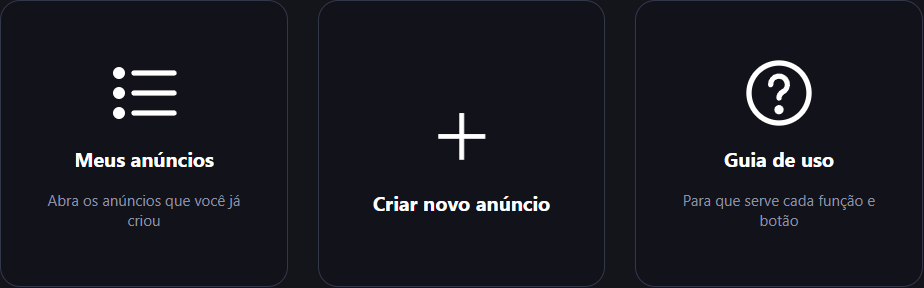
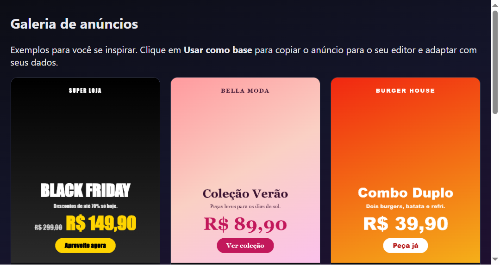
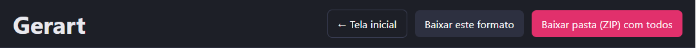
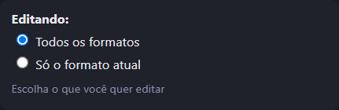
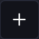
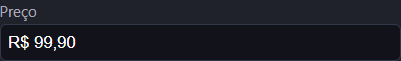
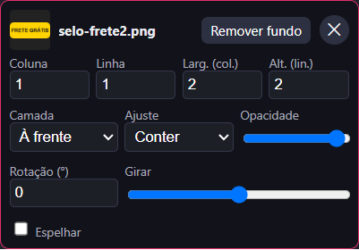
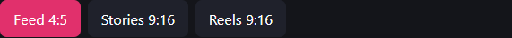
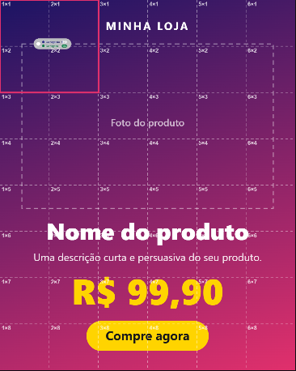

Exemplos para você se inspirar. Clique em Usar como base para copiar o anúncio para o seu editor e adaptar com seus dados.
Guia de uso
O Gerart cria as artes do seu anúncio para Feed (4:5 – 1080×1350), Stories (9:16 – 1080×1920) e Reels (9:16 – 1080×1920) ao mesmo tempo. Você preenche os dados uma vez, a prévia atualiza em tempo real e, no final, baixa tudo em PNG, pronto para publicar.
Resumo em 5 passos
Na tela inicial, clique em + Criar novo anúncio.
Preencha a seção Produto (foto, nome, preço…).
Ajuste cores e tamanhos na seção Estilo.
Confira os três formatos nas abas Feed, Stories e Reels.
Clique em Baixar pasta (ZIP) com todos e publique.
1. Tela inicial

Tela inicial: Meus anúncios, Importar anúncios, Criar novo anúncio, Galeria de anúncios e Guia de uso.

A galeria mostra modelos prontos. O botão "Usar como base" copia o modelo para o editor.
Criar novo anúncio (+): abre o editor com um anúncio em branco.
Meus anúncios: lista os anúncios que você já criou neste navegador. Clique em um para continuar editando; o ✕ exclui o anúncio da lista.
Importar anúncios: escolha um ou mais arquivos PNG (ou JPG) do seu computador. Eles entram na lista "Meus anúncios" com uma miniatura. Clique na linha para editar: a imagem vira o fundo do anúncio nos três formatos (cortada para preencher) e você pode adicionar textos, preço, botão, detalhes visuais e QR code por cima. Clique só na miniatura para ver a imagem em tamanho grande e baixá-la.
Galeria de anúncios: exemplos prontos para se inspirar. Clique em "Usar como base" para copiar o modelo para o editor e trocar pelos seus dados.
Guia de uso: esta página.
← Tela inicial: botão no topo que volta ao início. Tudo o que você alterou já fica salvo automaticamente.
2. Barra de cima (no editor)

Da esquerda para a direita: voltar ao início, baixar só o formato aberto e baixar tudo em ZIP (botão rosa).
Baixar este formato: baixa só o PNG do formato que está aberto na prévia.
Baixar pasta (ZIP) com todos: baixa um ZIP com os PNGs de Feed, Stories e Reels. É o botão que você usa para publicar.
3. Editando: todos os formatos ou só um

Fica no topo do painel esquerdo. Deixe em "Todos os formatos" na maior parte do tempo.
Todos os formatos: o que você muda vale para Feed, Stories e Reels.
Só o formato atual: a mudança vale só para o formato aberto (aba Feed/Stories/Reels). Use quando uma arte precisa ficar diferente das outras.
Ponto rosa ao lado do nome do campo: indica que esse campo foi personalizado só neste formato. Clique nele para voltar ao padrão (o valor de todos os formatos).
4. Seção Produto

O quadrado com + abre o seletor de arquivos para escolher a foto.

No campo de preço digite só números: 9990 vira R$ 99,90.
Foto do produto (quadrado +): escolhe a foto principal do anúncio. O ✕ ao lado remove a foto.
Remover/Restaurar fundo: aparece abaixo da foto. Recorta o fundo da imagem automaticamente (a primeira vez baixa um modelo e pode demorar um pouco; precisa de internet). "Restaurar fundo" volta à imagem original.
Marca / loja: nome pequeno no topo da arte.
Nome do produto e Descrição: textos principais da arte.
Preço antigo (opcional): aparece riscado, à esquerda do preço atual. Deixe vazio para não mostrar.
Preço: o preço em destaque. Digite só números: o "R$", os pontos e a vírgula entram sozinhos (ex.: 12990 vira R$ 129,90).
Chamada (botão): texto do botão da arte, por exemplo "Compre agora". Apagando o texto, o botão some. Lembre que o PNG não é clicável: o botão é só visual.
Link: se você colocar um link, aparece um QR code pequeno no canto inferior direito da arte. Quem escanear vai para esse endereço. O botão "Copiar" copia o link.
Textos extras (+ / ✕): adicione quantas linhas de texto quiser (ex.: "Frete grátis", "12x sem juros"). Cada uma tem texto, tamanho e cor. O ✕ remove o texto.
5. Seção Estilo
Cores do degradê (+ / ✕): as cores do fundo. Use o + para adicionar mais cores e o ✕ para remover (precisa ficar ao menos uma).
Fonte: tipo de letra de todos os textos.
Ângulo do degradê: gira a direção do degradê do fundo.
Cor do texto: cor dos textos em geral.
Cor de destaque: cor do preço e do botão.
Cor do texto do botão: cor das letras dentro do botão.
Alinhamento: alinhamento geral dos textos (esquerda, centro ou direita).
Tamanho do nome / da descrição / do preço: controles deslizantes para aumentar ou diminuir cada um.
Foto do produto (acima ou abaixo do texto): escolhe se a foto fica em cima ou embaixo dos textos.
Escala da foto e Deslocar foto (vertical / horizontal): aumentam/diminuem a foto e movem a foto para cima/baixo ou para a esquerda/direita.
Sombra na foto: liga ou desliga a sombra atrás da foto.
6. Detalhes visuais (biblioteca)
São imagens extras (selos, ícones, molduras, formas, logos) que você coloca em cima ou atrás da arte.
💡 Exemplo: suba um selo "Frete grátis" e clique nele; ele entra na arte e você escolhe a coluna e a linha onde ele fica.
Adicionar imagens (quadrado +): envia uma ou várias imagens para a biblioteca. Elas ficam salvas neste navegador e podem ser usadas em qualquer anúncio. PNG com fundo transparente costuma ficar melhor.
Clicar numa miniatura: coloca a imagem no formato atual.
Remover fundo (em cada imagem): tira o fundo só daquela imagem; "Restaurar fundo" desfaz.
× na miniatura: exclui a imagem da biblioteca e de todos os anúncios.
7. Grade e posicionamento
Cada formato é dividido em colunas × linhas para você posicionar os detalhes visuais com precisão.
Colunas / Linhas: quantidade de divisões da grade do formato atual (cada formato pode ter a sua).
Mostrar grade na prévia: mostra as linhas e os números (coluna×linha). A grade não aparece no PNG baixado.
Mostrar zona segura (Stories/Reels): marca em vermelho as áreas do topo e do rodapé que o Instagram cobre com a interface. Evite colocar itens importantes ali.
Cartão de cada detalhe:

Cartão de um detalhe visual: posição, tamanho, camada, ajuste, opacidade, rotação e espelhar. O ✕ no canto remove.
Coluna / Linha: onde o detalhe começa. Você também pode selecionar o detalhe e clicar na prévia para movê-lo para aquela célula.
Larg. (col.) / Alt. (lin.): quantas colunas e linhas ele ocupa.
Camada: "Atrás do conteúdo" ou "À frente" dos textos e da foto.
Ajuste: Conter (inteiro, sem cortar), Preencher (cobre a área, cortando as sobras) ou Esticar.
Opacidade: deixa o detalhe mais transparente.
Rotação / Girar: gira a imagem pelo número de graus ou pelo controle deslizante.
Espelhar: inverte a imagem na horizontal.
✕: remove o detalhe deste formato (a imagem continua na biblioteca).
8. Prévia (lado direito)

Abas para alternar entre Feed, Stories e Reels.

A prévia com a grade ligada. Cada célula mostra coluna×linha (ex.: 3×2). O quadrado rosa é o detalhe selecionado.Escolha um elemento na lista e use as barras: esquerda, centro, direita. O ↺ volta ao padrão.
Abas Feed / Stories / Reels: trocam o formato que você está vendo e editando.
Clicar em um texto na prévia: seleciona o elemento (tracejado rosa). Se um detalhe visual estiver selecionado, o clique move o detalhe; nesse caso use a lista.
Lista "Escolha um elemento" e botões de alinhamento: alinham à esquerda, ao centro ou à direita só o elemento escolhido (marca, nome, descrição, textos extras, preço ou botão). O botão ↺ faz o elemento voltar ao alinhamento geral.
Barra entre o painel e a prévia: arraste para esticar ou encolher o painel de ajustes. Dois cliques voltam ao tamanho padrão (no computador).
9. Dicas
Tudo é salvo automaticamente neste navegador. Se trocar de computador ou limpar os dados do navegador, os anúncios e a biblioteca não vêm junto.
Antes de baixar, confira os três formatos nas abas.
No celular a prévia fica fixa no topo e os controles rolam embaixo.